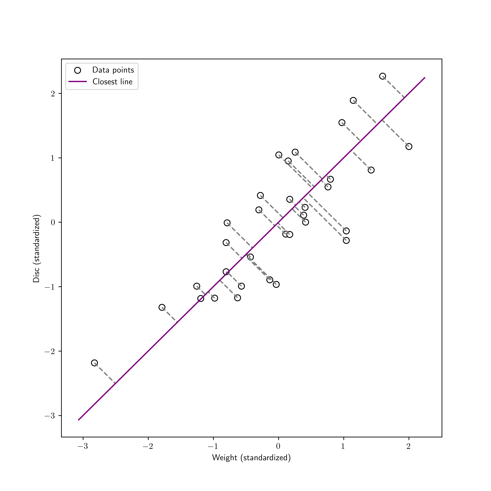

\(\newcommand{\bmu}{\boldsymbol{\mu}}\) \(\newcommand{\bSigma}{\boldsymbol{\Sigma}}\) \(\newcommand{\bfbeta}{\boldsymbol{\beta}}\) \(\newcommand{\bflambda}{\boldsymbol{\lambda}}\) \(\newcommand{\bgamma}{\boldsymbol{\gamma}}\) \(\newcommand{\bsigma}{{\boldsymbol{\sigma}}}\) \(\newcommand{\bpi}{\boldsymbol{\pi}}\) \(\newcommand{\btheta}{{\boldsymbol{\theta}}}\) \(\newcommand{\bphi}{\boldsymbol{\phi}}\) \(\newcommand{\balpha}{\boldsymbol{\alpha}}\) \(\newcommand{\blambda}{\boldsymbol{\lambda}}\) \(\renewcommand{\P}{\mathbb{P}}\) \(\newcommand{\E}{\mathbb{E}}\) \(\newcommand{\indep}{\perp\!\!\!\perp} \newcommand{\bx}{\mathbf{x}}\) \(\newcommand{\bp}{\mathbf{p}}\) \(\renewcommand{\bx}{\mathbf{x}}\) \(\newcommand{\bX}{\mathbf{X}}\) \(\newcommand{\by}{\mathbf{y}}\) \(\newcommand{\bY}{\mathbf{Y}}\) \(\newcommand{\bz}{\mathbf{z}}\) \(\newcommand{\bZ}{\mathbf{Z}}\) \(\newcommand{\bw}{\mathbf{w}}\) \(\newcommand{\bW}{\mathbf{W}}\) \(\newcommand{\bv}{\mathbf{v}}\) \(\newcommand{\bV}{\mathbf{V}}\) \(\newcommand{\bfg}{\mathbf{g}}\) \(\newcommand{\bfh}{\mathbf{h}}\) \(\newcommand{\horz}{\rule[.5ex]{2.5ex}{0.5pt}}\) \(\renewcommand{\S}{\mathcal{S}}\) \(\newcommand{\X}{\mathcal{X}}\) \(\newcommand{\var}{\mathrm{Var}}\) \(\newcommand{\pa}{\mathrm{pa}}\) \(\newcommand{\Z}{\mathcal{Z}}\) \(\newcommand{\bh}{\mathbf{h}}\) \(\newcommand{\bb}{\mathbf{b}}\) \(\newcommand{\bc}{\mathbf{c}}\) \(\newcommand{\cE}{\mathcal{E}}\) \(\newcommand{\cP}{\mathcal{P}}\) \(\newcommand{\bbeta}{\boldsymbol{\beta}}\) \(\newcommand{\bLambda}{\boldsymbol{\Lambda}}\) \(\newcommand{\cov}{\mathrm{Cov}}\) \(\newcommand{\bfk}{\mathbf{k}}\) \(\newcommand{\idx}[1]{}\) \(\newcommand{\xdi}{}\)
4.3. Approximating subspaces and the SVD#
In this section, we introduce the singular value decomposition (SVD). We motivate it via the problem of finding a best approximating subspace to a collection of data points – although it has applications far beyond.
4.3.1. An objective, an algorithm, and a guarantee#
Let \(\boldsymbol{\alpha}_1,\dots,\boldsymbol{\alpha}_n\) be a collection of \(n\) data points in \(\mathbb{R}^m\). A natural way to extract low-dimensional structure in this dataset is to find a low-dimensional linear subspace \(\mathcal{Z}\) of \(\mathbb{R}^m\) such that the \(\boldsymbol{\alpha}_i\)’s are “close to it.”

Mathematical formulation of the problem Again the squared Euclidean norm turns out to be computationally convenient. So we look for a linear subspace \(\mathcal{Z}\) that minimizes
over all linear subspaces of \(\mathbb{R}^m\) of dimension \(k\). To solve this problem, which we refer to as the best approximating subspace problem\(\idx{best approximating subspace problem}\xdi\), we make a series of observations.
KNOWLEDGE CHECK: Consider the data points \(\boldsymbol{\alpha}_1 = (-1,1)\) and \(\boldsymbol{\alpha}_2 = (1,-1)\). For \(k=1\), what is the solution of the best approximating subspace?
a) \(\mathcal{Z} = \{(x,y) \in \mathbb{R}^2 : y = x\}\)
b) \(\mathcal{Z} = \{(x,y) \in \mathbb{R}^2 : y = -x\}\)
c) \(\mathcal{Z} = \{(x,y) \in \mathbb{R}^2 : y = x + 1\}\)
d) \(\mathcal{Z} = \{(x,y) \in \mathbb{R}^2 : y = x - 1\}\)
e) None of the above
\(\checkmark\)
The first observation gives a related, useful characterization of the optimal solution.
LEMMA (Best Subspace as Maximimization) \(\idx{best subspace as maximimization lemma}\xdi\) Let \(\boldsymbol{\alpha}_i\), \(i =1\ldots,n\), be vectors in \(\mathbb{R}^m\). A linear subspace \(\mathcal{Z}\) of \(\mathbb{R}^m\) that minimizes
over all linear subspaces of dimension at most \(k\) also maximizes
over the same linear subspaces. And vice versa. \(\flat\)
Proof idea: This is a straightforward application of the triangle inequality.
Proof: By Pythagoras’ Theorem,
since, by the Orthogonal Projection Theorem, \(\mathrm{proj}_{\mathcal{Z}}(\boldsymbol{\alpha}_i)\) is orthogonal to \(\boldsymbol{\alpha}_i - \mathrm{proj}_{\mathcal{Z}}(\boldsymbol{\alpha}_i)\). Rearranging,
The result follows from the fact that the first term on the right-hand side does not depend on the choice of \(\mathcal{Z}\). More specifically, optimizing over linear subspaces \(\mathcal{Z}\) of dimension \(k\),
\(\square\)
How do we specify a \(k\)-dimensional linear subspace? Through a basis of it, or – even better – an orthonormal basis. In the latter case, we also have an explicit formula for the orthogonal projection. And the dimension of the linear subspace is captured by the number of elements in the basis, by the Dimension Theorem. In other words, the best approximating subspace can be obtained by solving the problem
over all orthonormal lists \(\mathbf{w}_1,\ldots,\mathbf{w}_k\) of length \(k\). Our next observation rewrites the problem in matrix form.
LEMMA (Best Subpace in Matrix Form) \(\idx{best subpace in matrix form lemma}\xdi\) Consider the matrix \(A \in \mathbb{R}^{n \times m}\) with rows \(\boldsymbol{\alpha}_i^T\). A solution to the best approximating subspace problem is obtained by solving
over all orthonormal lists \(\mathbf{w}_1,\ldots,\mathbf{w}_k\) of length \(k\). \(\flat\)
Proof idea: We start with the one-dimensional case. A one-dimensional space \(\mathcal{Z}\) is determined by a unit vector \(\mathbf{w}_1\). The projection \(\boldsymbol{\alpha}_i\) onto the span of \(\mathbf{w}_1\) is given by the inner product formula \(\langle \boldsymbol{\alpha}_i, \mathbf{w}_1 \rangle \,\mathbf{w}_1\). So
where, again, \(A\) is the matrix with rows \(\boldsymbol{\alpha}_i ^T\), \(i=1,\ldots, n\). Hence the solution to the one-dimensional problem is
Here \(\arg\max\) means that \(\mathbf{v}_1\) is a vector \(\mathbf{w}_1\) that achieves the maximum. Note that there could be more than one such \(\mathbf{w}_1\), so the right-hand side is a set containing all such solutions. By the Extreme Value Theorem (since the set \(\{\mathbf{w}_1 : \|\mathbf{w}_1\| = 1\}\) is closed and bounded, and since furthermore the function \(\|A \mathbf{w}_1\|^2\) is continuous in \(\mathbf{w}_1\)), there is at least one solution.
Proof: For general \(k\), we are looking for an orthonormal list \(\mathbf{w}_1,\ldots,\mathbf{w}_k\) of length \(k\) that maximizes
where \(\mathcal{Z}\) is the subspace spanned by \(\mathbf{w}_1,\ldots,\mathbf{w}_k\). On the second line, we used the Properties of Orthonormal Lists. That proves the claim. \(\square\)
We show next that a simple algorithm solves this problem.
A greedy algorithm \(\idx{greedy algorithm}\xdi\) Remarkably, the problem admits a greedy solution. Before discussing this solution, we take a small detour and give a classical example. Indeed, greedy approaches are a standard algorithmic tool for optimization problems. This is how Wikipedia describes them:
A greedy algorithm is any algorithm that follows the problem-solving heuristic of making the locally optimal choice at each stage. In many problems, a greedy strategy does not produce an optimal solution, but a greedy heuristic can yield locally optimal solutions that approximate a globally optimal solution in a reasonable amount of time.
Figure: A thief in an antique shop (Credit: Made with Gemini; and here is your reminder that AI generation of images still has a long way to go…)
\(\bowtie\)
EXAMPLE: Suppose you are thief and you broke into an antique shop at night. (Legal disclaimer: The greedy algorithm should be applied to legitimate resource allocation problems only.) You cannot steal every item in the store. You have estimated that you can carry 10 lbs worth of merchandise, and still run fast enough to get away. Suppose that there are 4 items of interest with the following weights and values
Item |
Weight (lbs) |
Value ($) |
|---|---|---|
1 |
8 |
1600 |
2 |
6 |
1100 |
3 |
4 |
700 |
4 |
1 |
100 |
There is exactly one of each item. Which items do you take? The siren is blaring, and you cannot try every combination. A quick scheme is to first pick the item of greatest value, i.e., Item 1. Now your bag has 8 lbs of merchandise in it. Then you consider the remaining items and choose whichever has highest value among those that still fit, i.e., those that are 2 lbs or lighter. That leaves only one choice, Item 4. Then you go – with a total value of 1700.
This is called a greedy or myopic strategy, because you chose the first item to maximize your profit without worrying about the constraints it imposes on future choice. Indeed, in this case, there is a better combination: you could have picked Items 2 and 3 with a total value of 1800.
Other greedy schemes are possible here. A slightly more clever approach is to choose items of high value per unit weight, rather than considering value alone. But, that would not make a difference in this particular example (Try it!). \(\lhd\)
Going back to the approximating subspace problem, we derive a greedy solution for it. Recall that we are looking for a solution to
over all orthonormal lists \(\mathbf{w}_1,\ldots,\mathbf{w}_k\) of length \(k\).
In a greedy approach, we first solve for \(\mathbf{w}_1\) by itself, without worrying about constraints it will impose on the next steps. That is, we compute
As indicated before, by the Extreme Value Theorem, such a \(\mathbf{v}_1\) exists, but may not be unique (in which case we pick an arbitrary one). Then, fixing \(\mathbf{w}_1 = \mathbf{v}_1\), we consider all unit vectors \(\mathbf{w}_2\) orthogonal to \(\mathbf{v}_1\) and maximize the contribution of \(\mathbf{w}_2\) to the objective function. That is, we solve
Again, such a \(\mathbf{v}_2\) exists by the Extreme Value Theorem. Then proceeding by induction, for each \(i = 3, \ldots, k\), we compute
A different way to write the constraint is
While it is clear that, after \(k\) steps, this procedure constructs an orthonormal set of size \(k\), it is far from obvious that it maximizes \(\sum_{j=1}^k \|A \mathbf{v}_j\|^2\) over all such sets. Remarkably it does. The claim – which requires a proof – is that the best \(k\)-dimensional approximating subspace is obtained by finding the best \(1\)-dimensional subspace, then the best \(1\)-dimensional subspace orthogonal to the first one, and so on. This follows from the next theorem.
THEOREM (Greedy Finds Best Subspace) \(\idx{greedy finds best subspace theorem}\xdi\) Let \(A \in \mathbb{R}^{n \times m}\) be a matrix with rows \(\boldsymbol{\alpha}_i^T\), \(i=1,\ldots,n\). For any \(k \leq m\), let \(\mathbf{v}_1,\ldots,\mathbf{v}_k\) be a greedy sequence as constructed above. Then \(\mathcal{Z}^* = \mathrm{span}(\mathbf{v}_1,\ldots,\mathbf{v}_k)\) is a solution to the minimization problem
\(\sharp\)
Beyond the potential computational advantage of solving several lower-dimensional problems rather one larger-dimensional one, a greedy sequence has a more subtle property that is powerful. It allows us to solve the problem for all choices \(k\) of target dimension simultaneously. To explain, note that the largest \(k\) value, i.e. \(k=m\), leads to a trivial problem. Indeed, the data points \(\boldsymbol{\alpha}_i\), \(i=1,\ldots,n\), already lie in an \(m\)-dimensional linear subspace, \(\mathbb{R}^m\) itself. So we can take \(\mathcal{Z} = \mathbb{R}^m\), and we have an objective value of
which clearly cannot be improved. So any orthonormal basis of \(\mathbb{R}^m\) will do. Say \(\mathbf{e}_1,\ldots,\mathbf{e}_m\).
On the other hand, a greedy sequence \(\mathbf{v}_1,\ldots,\mathbf{v}_m\) has a very special property. For any \(k \leq m\), the truncation \(\mathbf{v}_1,\ldots,\mathbf{v}_k\) solves the approximating subspace problem in \(k\) dimensions. That follows immediately from the Greedy Finds Best Subspace Theorem. The basis \(\mathbf{e}_1,\ldots,\mathbf{e}_m\) (or any old basis of \(\mathbb{R}^m\) for that matter) does not have this property. The idea of truncation is very useful and plays an important role in many data science applications; we will come back to it later in this section and the next one.
We sketch the proof of a weaker claim via the Spectral Theorem, an approach which reveals additional structure in the solution.
We re-write the objective function as
and we observe that \(A^T A \in \mathbb{R}^{m \times m}\) is a square, symmetric matrix (Why?). It is also positive, semidefinite (Why?). Hence, by the Spectral Theorem, the matrix \(A^T A\) has \(m\) orthonormal eigenvectors \(\mathbf{q}_1, \ldots, \mathbf{q}_m \in \mathbb{R}^m\) with corresponding real eigenvalues \(\lambda_1 \geq \lambda_2 \geq \cdots \geq \lambda_m \geq 0\). This ordering of the eigenvalues will play a critical role. Moreover
Plugging this in the objective we get
Here is the claim. While a greedy sequence \(\mathbf{v}_1,\ldots,\mathbf{v}_k\) is not in general unique, one can always choose \(\mathbf{v}_i = \mathbf{q}_i\) for all \(i\). Moreover that particular choice indeed solves the \(k\)-dimensional best approximating subspace problem. We restrict ourselves to the case \(k = 2\).
Eigenvectors form a greedy sequence: Recall that \(\mathbf{v}_1\) maximizes \(\|A \mathbf{w}_1\|\) over all unit vectors \(\mathbf{w}_1\). Now note that, expanding over the eigenvectors (which form an orthonormal basis), we have
and
Writing \(x_i = (\mathbf{w}_1^T\mathbf{q}_i)^2\), this boils down to maximizing \(\sum_{i=1}^m \lambda_i x_i\) subject to the constraints \(\sum_{i=1}^m x_i = 1\) and \(x_i \geq 0\) for all \(i\). But, under the constraints and the assumption on the ordering of the eigenvalues,
Formally, we have shown that \(\|A \mathbf{w}_1\|^2 \leq \lambda_1\), for any unit vector \(\mathbf{w}_1\). Now, note that this upper bound is actually achieved by taking \(\mathbf{v}_1 = \mathbf{w}_1 = \mathbf{q}_1\), which corresponds to \(\mathbf{x} = (x_1,\ldots,x_m) = \mathbf{e}_1\).
Given that choice, the vector \(\mathbf{v}_2\) maximizes \(\|A \mathbf{w}_2\|\) over all unit vectors \(\mathbf{w}_2\) such that further \(\mathbf{w}_2^T\mathbf{v}_1 = \mathbf{w}_2^T\mathbf{q}_1 = 0\), where this time
and
In both equations above, we used the orthogonality constraint. This reduces to the previous problem without the term depending on \(\mathbf{q}_1\). The solution is otherwise the same, i.e., the optimal objective is \(\lambda_2\) and is achieved by taking \(\mathbf{v}_2 = \mathbf{w}_2 = \mathbf{q}_2\).
Eigenvectors solve the approximating subspace problem: The approximating subspace problem for \(k = 2\) involves maximizing
over orthonormal lists \(\mathbf{w}_1, \mathbf{w}_2\). In particular, we require
and
Moreover, for each \(i\), by definition of the orthogonal projection on the subspace \(\mathcal{W} = \mathrm{span}(\mathbf{w}_1, \mathbf{w}_2)\) and the Properties of Orhtonormal Lists
(Prove the inequality!) Write \(x_i = (\mathbf{w}_1^T\mathbf{q}_i)^2\) and \(y_i = (\mathbf{w}_2^T\mathbf{q}_i)^2\). The objective function can be written as \(\sum_{i=1}^m \lambda_i (x_i + y_i)\) and the constraints we have derived are \(\sum_{i=1}^m x_i = \sum_{i=1}^m y_i = 1\) and \(x_i + y_i \leq 1\) for all \(i\). Also clearly \(x_i, y_i \geq 0\) for all \(i\). So
Formally, we have shown that \(\|A \mathbf{w}_1\|^2 + \|A \mathbf{w}_2\|^2 \leq \lambda_1 + \lambda_2\) for any orthonormal list \(\mathbf{w}_1, \mathbf{w}_2\). That upper bound is achieved by taking \(\mathbf{w}_1 = \mathbf{q}_1\) and \(\mathbf{w}_2 = \mathbf{q}_2\), proving the claim.
KNOWLEDGE CHECK: Proceed by induction to show that the claim holds for any \(k\). \(\checkmark\)
Note that we have not entirely solved the best approximating subspace problem from a computational point of view, as we have not given an explicit procedure to construct a solution to the lower-dimensional subproblems, i.e., construct the eigenvectors. We have only shown that the solutions exist and have the right properties. We will take care of computational issues later in this chapter.
4.3.2. From approximating subspaces to the SVD#
While solving the approximating subspace problem in the previous section, we derived the building blocks of a matrix factorization that has found many applications, the singular value decomposition (SVD). In this section, we define the SVD formally. We describe a simple method to compute it in the next section, where we also return to the application to dimensionality reduction.
Definition and existence of the SVD We now come to our main definition.
DEFINITION (Singular Value Decomposition) \(\idx{singular value decomposition}\xdi\) Let \(A \in \mathbb{R}^{n\times m}\) be a matrix. A singular value decomposition (SVD) of \(A\) is a matrix factorization
where the columns of \(U \in \mathbb{R}^{n \times r}\) and those of \(V \in \mathbb{R}^{m \times r}\) are orthonormal, and \(\Sigma \in \mathbb{R}^{r \times r}\) is a diagonal matrix. Here the \(\mathbf{u}_j\)s are the columns of \(U\) and are referred to as left singular vectors\(\idx{singular vector}\xdi\). Similarly the \(\mathbf{v}_j\)s are the columns of \(V\) and are referred to as right singular vectors. The \(\sigma_j\)s, which are positive and in non-increasing order, i.e.,
are the diagonal elements of \(\Sigma\) and are referred to as singular values\(\idx{singular value}\xdi\). \(\natural\)
To see where the equality \(U \Sigma V^T = \sum_{j=1}^r \sigma_j \mathbf{u}_j \mathbf{v}_j^T\) comes from, we break it up into two steps.
First note that the matrix product \(U \Sigma\) has columns \(\sigma_1 \mathbf{u}_1,\ldots,\sigma_r \mathbf{u}_r\).
The rows of \(V^T\) are the columns of \(V\) as row vectors.
In terms of outer products, the matrix product \(U \Sigma V^T = (U \Sigma) V^T\) is the sum of the outer products of the columns of \(U \Sigma\) and of the rows of \(V^T\) (i.e., the columns of \(V\) as row vectors).
That proves the equality.
KNOWLEDGE CHECK: Let \(A \in \mathbb{R}^{n\times m}\) be a matrix with SVD
Which statement is true in general?
a) \(\mathrm{col}(A) = \mathrm{col}(V)\)
b) \(\mathrm{col}(A) = \mathrm{col}(V^T)\)
c) \(\mathrm{col}(A) = \mathrm{col}(U)\)
d) \(\mathrm{col}(A) = \mathrm{col}(U^T)\)
e) \(\mathrm{col}(A) = \mathrm{col}(\Sigma)\)
\(\checkmark\)
Remarkably, any matrix has an SVD.
THEOREM (Existence of an SVD) \(\idx{existence of an SVD}\xdi\) Any matrix \(A \in \mathbb{R}^{n\times m}\) has a singular value decomposition. \(\sharp\)
We give a proof via the Spectral Theorem.
The construction: Let \(A \in \mathbb{R}^{n \times m}\) and recall that \(A^T A\) is symmetric and positive semidefinite. Hence the latter has a spectral decomposition
Order the eigenvalues in non-increasing order \(\lambda_1 \geq \cdots \geq \lambda_m \geq 0\). Assume that the eigenvalues \(\lambda_1,\ldots,\lambda_r\) are nonzero while \(\lambda_{r+1} = \cdots = \lambda_m = 0\). Let \(\mathbf{q}_1,\ldots,\mathbf{q}_n\) be corresponding eigenvectors. Let \(Q_1 \in \mathbb{R}^{m \times r}\) be the matrix whose columns are \(\mathbf{q}_1,\ldots,\mathbf{q}_r\) and \(\Lambda_1 \in \mathbb{R}^{r \times r}\) be the diagonal matrix with \(\lambda_1,\ldots,\lambda_r\) on its diagonal. Similarly, let \(Q_2 \in \mathbb{R}^{m \times (m-r)}\) be the matrix whose columns are \(\mathbf{q}_{r+1},\ldots,\mathbf{q}_m\) and \(\Lambda_2 = \mathbf{0} \in \mathbb{R}^{(m-r) \times (m-r)}\).
The matrix \(A^T A\), which is comprised of all inner products of the data points, is known as a Gram matrix.
We are now ready for our main claim. For a diagonal matrix \(D\) with nonnegative diagonal entries, we let \(D^{1/2}\) denote the diagonal matrix obtained by taking the square root of each diagonal entry. Similarly, when \(D\) has positive diagonal entries, we define \(D^{-1/2}\) as the diagonal matrix whose diagonal entries are the reciprocals of the square roots of the corresponding diagonal entries of \(D\).
THEOREM (SVD via Spectral Decomposition) \(\idx{SVD via spectral decomposition}\xdi\) Let \(A \in \mathbb{R}^{n \times m}\) and let \(Q_1, \Lambda_1\) be as above. Define
Then \(A = U \Sigma V^T\) is a singular value decomposition of \(A\). \(\sharp\)
Proof idea: Check by hand that all properties of the SVD are satisfied by the construction above.
Proof: By construction, the columns of \(V = Q_1\) are orthonormal. The matrix \(\Sigma = \Lambda_1^{1/2}\) is diagonal and, because \(A^T A\) is positive semidefinite, the eigenvalues are non-negative. So it remains to prove two things: that the columns of \(U\) are orthonormal and, finally, that \(A = U \Sigma V^T\).
KNOWLEDGE CHECK: Prove that
a) \(A^T A Q_1 = Q_1 \Lambda_1\) and \(A^T A Q_2 = Q_2 \Lambda_2 = \mathbf{0}\),
b) \(Q_1 Q_1^T + Q_2 Q_2^T = I_{m \times m}\).
\(\checkmark\)
LEMMA (Step 1) The columns of \(U\) are orthonormal. \(\flat\)
Proof: By direct computation,
Because the columns of \(Q_1\) are eigenvectors of \(A^T A\), we have that \(A^T A Q_1 = Q_1 \Lambda_1\). Further those eigenvectors are orthonormal so that \(Q_1^T Q_1 = I_{r \times r}\). Plugging above and simplifying gives
as claimed. \(\square\)
LEMMA (Step 2) It holds that \(A = U \Sigma V^T\). \(\flat\)
Proof: By direct computation, we have
The matrix \(Q_1 Q_1^T\) is an orthogonal projection on the subspace spanned by the vectors \(\mathbf{q}_1,\ldots,\mathbf{q}_r\). Similarly, the matrix \(Q_2 Q_2^T\) is an orthogonal projection on the orthogonal complement (spanned by \(\mathbf{q}_{r+1},\ldots,\mathbf{q}_m\)). Hence \(Q_1 Q_1^T + Q_2 Q_2^T = I_{m \times m}\). Replacing above we get
Now note that for any \(\mathbf{q}_i\), \(i=r+1,\ldots,m\), we have \(A^T A \mathbf{q}_i = \mathbf{0}\), so that \(\mathbf{q}_i^T A^T A \mathbf{q}_i = \|A \mathbf{q}_i\|^2 = 0\). That implies that \(A \mathbf{q}_i = \mathbf{0}\) and further \(A Q_2 = \mathbf{0}\). Substituting above concludes the proof. \(\square\)
That concludes the proof of the theorem. \(\square\)
We record the following important consequence.
LEMMA (SVD and Rank) \(\idx{SVD and rank lemma}\xdi\) Let \(A \in \mathbb{R}^{n\times m}\) have singular value decomposition \(A = U \Sigma V^T\) with \(U \in \mathbb{R}^{n \times r}\) and \(V \in \mathbb{R}^{m \times r}\). Then the columns of \(U\) form an orthonormal basis of \(\mathrm{col}(A)\) and the columns of \(V\) form an orthonormal basis of \(\mathrm{row}(A)\). In particular, the rank of \(A\) is \(r\). \(\flat\)
Proof idea: We use the SVD to show that the span of the columns of \(U\) is \(\mathrm{col}(A)\), and similarly for \(V\).
Proof: We first prove that any column of \(A\) can be written as a linear combination of the columns of \(U\). Indeed, this follows immediately from the SVD by noting that for any canonical basis vector \(\mathbf{e}_i \in \mathbb{R}^m\) (which produces column \(i\) of \(A\) with \(A \mathbf{e}_i\))
Vice versa, any column of \(U\) can be written as a linear combination of the columns of \(A\). To see this, we use the orthonormality of the \(\mathbf{v}_j\)’s and the positivity of the singular values to obtain
That is, \(\mathrm{col}(U) = \mathrm{col}(A)\). We have already shown that the columns of \(U\) are orthonormal. Since their span is \(\mathrm{col}(A)\), they form an orthonormal basis of it. Applying the same argument to \(A^T\) gives the claim for \(V\) (try it!). \(\square\)
EXAMPLE: Let
We compute its SVD. In this case it can be done (or guessed) using what we know about the SVD. Note first that \(A\) is not invertible. Indeed, its rows are a multiple of one another. In particular, they are not linearly independent. In fact, that tells us that the rank of \(A\) is \(1\), the dimension of its row space. In the rank one case, computing the SVD boils down to writing the matrix \(A\) in outer product form
where we require that \(\sigma_1 > 0\) and that \(\mathbf{u}_1, \mathbf{v}_1\) are of unit norm.
Recall that an outer product has columns that are all multiples of the same vector. Here because the second column of \(A\) is \(\mathbf{0}\), it must be that the second component of \(\mathbf{v}_1\) is \(0\). To be of unit norm, its first component must be \(1\) or \(-1\). (The choice here does not matter because multiplying all left and right singular vectors by \(-1\) produces another SVD.) We choose \(1\), i.e., we let
That vector is indeed an orthonormal basis of the row space of \(A\). Then we need
For \(\mathbf{u}_1\) to be of unit norm, we must have
Observe that \(\mathbf{u}_1\) is indeed an orthonormal basis of the column space of \(A\). \(\lhd\)
One might hope that the SVD of a symmetric matrix generates identical left and right singular vectors. However that is not the case.
EXAMPLE: An SVD of \(A = (-1)\) is \(A = (1)\,(1)\,(-1)\). That is, \(\mathbf{u}_1 = (1)\) and \(\mathbf{v} = (-1)\). \(\lhd\)
We collect in the next lemma some relationships between the singular vectors and singular values that will be used repeatedly. It also further clarifies the connection between the SVD of \(A\) and the spectral decomposition of \(A^T A\) and \(A A^T\).
LEMMA (SVD Relations) \(\idx{SVD relations}\xdi\) Let \(A = \sum_{j=1}^r \sigma_j \mathbf{u}_j \mathbf{v}_j^T\) be an SVD of \(A \in \mathbb{R}^{n \times m}\) with \(\sigma_1 \geq \sigma_2 \geq \cdots \geq \sigma_r > 0\). Then, for \(i=1,\ldots,r\),
A fortiori
and, for \(j \neq i\),
\(\flat\)
We previously established the existence of an SVD via the spectral decomposition of \(A^T A\). The previous lemma shows that in fact, in any SVD, the \(\mathbf{v}_i\)s are orthonormal eigenvectors of \(A^T A\). They do not form an orthonormal basis of the full space \(\mathbb{R}^m\) however, as the rank \(r\) can be strictly smaller than \(m\). But observe that any vector \(\mathbf{w}\) orthogonal to \(\mathrm{span}(\mathbf{v}_1,\ldots,\mathbf{v}_r)\) is such that
and, a fortiori,
So \(\mathbf{w}\) is in fact an eigenvector of \(A^T A\) with eigenvalue \(0\). Let \(\mathbf{v}_{r+1}, \ldots, \mathbf{v}_m\) be any orthonormal basis of \(\mathrm{span}(\mathbf{v}_1,\ldots,\mathbf{v}_r)^\perp\). Then \(\mathbf{v}_1,\ldots,\mathbf{v}_m\) is an orthonormal basis of eigenvectors of \(A^T A\).
The lemma also shows that the \(\mathbf{u}_i\)s are orthonormal eigenvectors of \(A A^T\)!
Full vs. compact SVD What we have introduced above is in fact referred to as a compact SVD. In contrast, in a full SVD\(\idx{full SVD}\xdi\), the matrices \(U\) and \(V\) are square and orthogonal, and the matrix \(\Sigma\) is diagonal, but may not be square and may have zeros on the diagonal. In particular, in that case, the columns of \(U \in \mathbb{R}^{n \times n}\) form an orthonormal basis of \(\mathbb{R}^n\) and the columns of \(V \in \mathbb{R}^{m \times m}\) form an orthonormal basis of \(\mathbb{R}^m\).
Figure: SVD in full form (Source)
{kind=link}

\(\bowtie\)
Let \(A = U_1 \Sigma_1 V_1^T\) be a compact SVD. Complete the columns of \(U_1\) into an orthonormal basis of \(\mathbb{R}^n\) and let \(U_2\) be the matrix whose columns are the additional basis vectors. Similary, complete the columns of \(V_1\) into an orthonormal basis of \(\mathbb{R}^m\) and let \(V_2\) be the matrix whose columns are the additional basis vectors. Then a full SVD is given by
By the SVD and Rank Lemma, the columns of \(U_1\) form an orthonormal basis of \(\mathrm{col}(A)\). Because \(\mathrm{col}(A)^\perp = \mathrm{null}(A^T)\), the columns of \(U_2\) form an orthonormal basis of \(\mathrm{null}(A^T)\). Similarly, the columns of \(V_1\) form an orthonormal basis of \(\mathrm{col}(A^T)\). Because \(\mathrm{col}(A^T)^\perp = \mathrm{null}(A)\), the columns of \(V_2\) form an orthonormal basis of \(\mathrm{null}(A)\). Hence, a full SVD provides an orthonormal basis for all four fundamental subspaces of \(A\).
Vice versa, given a full SVD \(A = U \Sigma V^T\), the compact SVD can be obtained by keeping only the square submatrix of \(\Sigma\) with stricly positive diagonal entries, together with the corresponding columns of \(U\) and \(V\).
Figure: Different variants of the SVD (Source)
{kind=link}

\(\bowtie\)
EXAMPLE: (continued) Let again
We previously computed its compact SVD
where
We now compute a full SVD. For this, we need to complete the bases. We can choose (why?)
Then, a full SVD is given by
Indeed, \(A = U \Sigma V^T\) (check it!). \(\lhd\)
The full SVD also has a natural geometric interpretation. To quote [Sol, p. 133]:
The SVD provides a complete geometric characterization of the action of \(A\). Since \(U\) and \(V\) are orthogonal, they have no effect on lengths and angles; as a diagonal matrix, \(\Sigma\) scales individual coordinate axes. Since the SVD always exists, all matrices \(A \in \mathbb{R}^{n \times m}\) are a composition of an isometry, a scale in each coordinate, and a second isometry.
Figure: Geometric interpretation of the SVD (Source)
{kind=link}

\(\bowtie\)
Coming full circle: solving the approximating subspace problem via the SVD Think of the rows \(\boldsymbol{\alpha}_i^T\) of a matrix \(A \in \mathbb{R}^{n \times m}\) as a collection of \(n\) data points in \(\mathbb{R}^m\). Let
be a (compact) SVD of \(A\). Fix \(k \leq \mathrm{rk}(A)\). We are looking for a linear subspace \(\mathcal{Z}\) that minimizes
over all linear subspaces of \(\mathbb{R}^m\) of dimension at most \(k\). By the observations above, a solution is given by
By the proofs of the Best Subspace as Maximization and Best Subspace in Matrix Form lemmas, the objective value achieved is
So the singular value \(\sigma_j\) associated to the right singular vector \(\mathbf{v}_j\) captures its contribution to the fit of the approximating subspace. The larger the singular value, the larger the contribution.
To obtain a low-dimensional embedding of our original datasets, we compute \(\mathbf{z}_i := \mathrm{proj}_\mathcal{Z}(\boldsymbol{\alpha}_i)\) for each \(i\) as follows (in row form)
where \(V_{(k)}\) is the matrix with the first \(k\) columns of \(V\). Let \(Z\) be the matrix with rows \(\mathbf{z}_i^T\). Then we have
where \(U_{(k)}\) is the matrix with the first \(k\) columns of \(U\), and \(\Sigma_{(k)}\) is the matrix with the first \(k\) rows and columns of \(\Sigma\). Indeed, recall that \(A \mathbf{v}_j = \sigma_j \mathbf{u}_j\), or in matrix form \(A V_{(k)} = U_{(k)} \Sigma_{(k)}\). The rightmost expression for \(Z\) reveals that it is in fact a truncated SVD. We can interpret the rows of \(U_{(k)} \Sigma_{(k)}\) as the coefficients of each data point in the basis \(\mathbf{v}_1,\ldots,\mathbf{v}_k\). Those coefficients provide the desired low-dimensional representation.
We can re-write the objective function in a more compact matrix form by using the Frobenius norm as follows
We note that the matrix \(Z\) has rank smaller or equal than \(k\). Indeed, all of its rows lie in the optimal subspace \(\mathcal{Z}\), which has dimension \(k\) by construction. We will see later that \(Z\) is the best approximation to \(A\) among all rank-\(k\) matrices under the Frobenius norm, that is,
for any matrix \(B\) of rank at most \(k\).
Self-assessment quiz (with help from Claude, Gemini, and ChatGPT)
1 Let \(\boldsymbol{\alpha}_1, \dots, \boldsymbol{\alpha}_n\) be data points in \(\mathbb{R}^m\). What is the objective of the best approximating subspace problem?
a) To find a linear subspace \(\mathcal{Z}\) of \(\mathbb{R}^m\) that minimizes the sum of the distances between the \(\boldsymbol{\alpha}_i\)’s and \(\mathcal{Z}\).
b) To find a linear subspace \(\mathcal{Z}\) of \(\mathbb{R}^m\) that minimizes the sum of the squared distances between the \(\boldsymbol{\alpha}_i\)’s and their orthogonal projections onto \(\mathcal{Z}\).
c) To find a linear subspace \(\mathcal{Z}\) of \(\mathbb{R}^m\) that maximizes the sum of the squared norms of the orthogonal projections of the \(\boldsymbol{\alpha}_i\)’s onto \(\mathcal{Z}\).
d) Both b and c.
2 Consider the data points \(\boldsymbol{\alpha}_1 = (-2,2)\) and \(\boldsymbol{\alpha}_2 = (3,-3)\). For \(k=1\), what is the solution of the best approximating subspace problem?
a) \(\mathcal{Z} = \{(x,y) \in \mathbb{R}^2 : y = x\}\)
b) \(\mathcal{Z} = \{(x,y) \in \mathbb{R}^2 : y = -x\}\)
c) \(\mathcal{Z} = \{(x,y) \in \mathbb{R}^2 : y = x+1\}\)
d) \(\mathcal{Z} = \{(x,y) \in \mathbb{R}^2 : y = x-1\}\)
3 Which of the following is true about the SVD of a matrix \(A\)?
a) The SVD of \(A\) is unique.
b) The right singular vectors of \(A\) are the eigenvectors of \(A^TA\).
c) The left singular vectors of \(A\) are the eigenvectors of \(AA^T\).
d) Both b and c.
4 Let \(A = U \Sigma V^T\) be an SVD of \(A\). Which of the following is true?
a) \(A \mathbf{v}_i = \sigma_i \mathbf{u}_i\) for all \(i\).
b) \(A^T \mathbf{u}_i = \sigma_i \mathbf{v}_i\) for all \(i\).
c) \(\|A\mathbf{v}_i\| = \sigma_i\) for all \(i\).
d) All of the above.
5 The columns of \(U\) in the compact SVD form an orthonormal basis for:
a) \(\mathrm{col}(A)\)
b) \(\mathrm{row}(A)\)
c) \(\mathrm{null}(A)\)
d) \(\mathrm{null}(A^T)\)
Answer for 1: d. Justification: The text defines the best approximating subspace problem as minimizing the sum of squared distances between the data points and their projections onto the subspace, and it also states a lemma that this problem is equivalent to maximizing the sum of squared norms of the projections.
Answer for 2: b. Justification: By symmetry, the best approximating line must pass through the origin and bisect the angle between the two points. This is the line \(y=-x\).
Answer for 3: c and d. Justification: The SVD is not unique in general. The other two statements are true and are mentioned in the text.
Answer for 4: d. Justification: This is a lemma stated in the text.
Answer for 5: a. Justification: The text states in the SVD and Rank Lemma: “the columns of \(U\) form an orthonormal basis of \(\mathrm{col}(A)\)”.